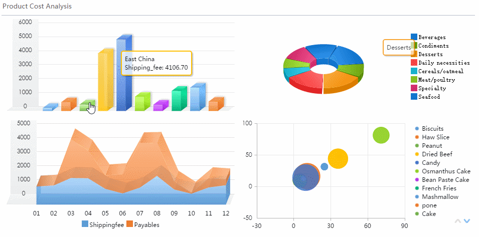

Effective Data Analyst with hands-on experience evaluating decision support systems and determining best processes to make
effective business decisions, standardize decision support functions, and translate requirements into applications that employ
appropriate decision support and reporting tools. Talented technical expert specialized in proposing solutions to complex
business problems and leading the implementation of recommended solutions. Demonstrated experience in strategic financial
analyses to improve visibility, simplify reporting, improve data accuracy and integrity, establish core metrics, and inform
strategic planning with continuous forecasting and modeling.
 Recomendations
Recomendations
Homelessness is an continued issue which burden’s our community across the globe, specially elevated with COVID. Goal of the project is to dive into factors that are related to homeleness and housing prices using various data available to us nationwide.
Analysis of reported causes of flight delays and cancellations given the unprecedented impact of the COVID-19.
Used Matplotlib to data visualize a company's drug-based, anti-cancer pharmaceuticals. This animal study includes drug data from 250 mice over a period of 45 days.
Created an Entity Relationship Diagram (ERD) for an employee database using PostgresSQL, along with SQLAlchemy, to build and extract data modeling queries.

Using Python programming language analyzed Financial Records for a company and summarize a large dataset ( > 350,000) of Voting Records for a small rural town.
Analyze the district-wide standardized math and reading test results using Python, Jupyter and Pandas data analysis library. Complete data set includes test results from 40,000 students and budgets from each school.

A webpage designed for UFO sightings that uses JavaScript, HTML, and CSS, and D3 js.

What's the weather like as we approach the equator? Designed a responsive dashboard that contains a landing page, a visualizations page, a comparisons page, and a data page. The data source comes from OpenWeatherMap API.